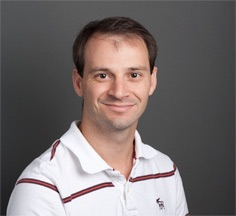

Quick Information
In order to meet the demands of high performance computing (HPC) researchers, large-scale computational and storage machines require many staff members who design, install, and maintain these systems. These HPC systems professionals include system engineers, system administrators, network administrators, storage administrators and operations staff all who face problems that are specific to high performance systems.
The Systems Professionals Workshop intends to be a platform for discussing the unique challenges that come from supporting large-scale, high performance systems. We are soliciting submissions that speak directly to the state of the practice of standing up and operating high performance systems with an emphasis on solutions that can be implemented by systems staff at other institutions.
We will be presenting the Inaugural HPC Systems Professionals Workshop at SC 16 on Monday afternoon (November 14, 2016).
Invited Paper: HPC Systems Acceptance: Controlled Chaos
|  Paul Peltz |
System acceptance is critical when deploying HPC resources from small clusters to large supercomputers. Each type of system has its own challenges and having a well established and proven test, acceptance, and integration plan is an invaluable tool to the site and the vendor. The topic of systems acceptance is quite broad. This talk will be mostly focused on the system?s software and hardware components.
Biography:
|
Schedule
| Start | End | Description | Slides | |
|---|---|---|---|---|
| 2:00 PM | 2:05 | Welcome | ||
| 2:05 PM | 3:00 PM | Panel Discussion: Recruiting and Professional Development of HPC Systems Professionals | ||
| 3:00 PM | 3:30 PM | Break | ||
| 3:30 PM | 3:50 PM | Invited Paper: HPC Systems Acceptance: Controlled Chaos by Paul Peltz | Slides(pdf) | |
| 4:00 PM | 4:15 PM | Paper: Account Management on Large-Scale HPC by Brett Bode | Slides(pptx) | |
| 4:20 PM | 4:35 PM | Paper: Cluster Computing with OpenHPC by Karl Schulz | Slides(pdf) | |
| 4:40 PM | 4:55 PM | Paper: Increasing HPC Resiliency Leads to Greater Productivity by Roger Moye | Slides(pdf) | |
| 5:00 PM | 5:15 PM | Paper: Blue Waters Resource Management and Job Scheduling Best Practices by Jeremy Enos | Slides(pptx) | |
| 5:20 PM | 5:30 PM | Wrap Up | ||
| Member | Employer | Degree |
|---|---|---|
| Karl Schulz | Intel | PhD |
| Dane Skow | University of Wyoming | PhD |
| Paul Brenner | Notre Dame | PhD |
| Andree Jacobson | New Mexico Consortium | MS |
Topics of Interest
Here are some topics of interest for this group. Note that these are here to indicate direction, not to disallow other related topics.
- Cluster, configuration, or software management
- Performance tuning/Benchmarking
- Resource manager and job scheduler configuration
- Monitoring/Mean-time-to-failure/ROI/Resource utilization
- Virtualization/Clouds
- Designing and troubleshooting HPC interconnects
- Designing and maintaining HPC storage solutions
- Cybersecurity and data protection
- Cluster storage
Example paper ideas might be:
- Best practices for job scheduler configuration
- Advantages of cluster automation
- Managing software on HPC clusters
Information
- Call for Papers
- Calendar of events
Event Date Submission Deadline August 26th Acceptance Notifications September 30th (updated) Camera Ready Papers October 21st (updated) Inaugural HPC Systems Professionals Workshop November 14th
Organizing Committee
| Position | Name | Affiliation |
|---|---|---|
| Chair | Randy Herban | Purdue University |
| Vice Chair | Isaac Traxler | LSU HPC LONI HPC |
| Program Committee Chair | Jenett Tillotson | Indiana University |
| Organizing Committee | William Scullin Stephen Lien Harrell Robert Ping Prentice Bisbal Henry Neeman |
Argonne National Laboratory Purdue University Indiana University Princeton Plasma Physics Laboratory University of Oklahoma |
Program Committee
| Name | Affiliation |
|---|---|
| Brett Bode | NCSA |
| Matt Ezell | Oak Ridge National Labs |
| Pat Finnegan | Purdue University |
| Stephen Harrell | Purdue University |
| Randy Herban | Purdue University |
| Sharan Kalwani | Michigan State University |
| HonWai Leong | IBM/NCSA |
| Scott McMillan | NVIDIA |
| Henry Neeman | University of Oklahoma |
| Jeff Raymond | University of Pittsburgh |
| Randy Schauer | Ratheon |
| Jenett Tillotson | Indiana University |
| Isaac Traxler | LSU HPC LONI HPC |
| George Turner | Indiana University |
Call for Papers
The Call for papers is live. We are looking for papers related to HPC admining. Our submission deadline has been extended to August 26th, 2016.
Contact Information
Please send email to hpcsyspros.
Links
- HPC Sysadmin Mailing List - you should join!